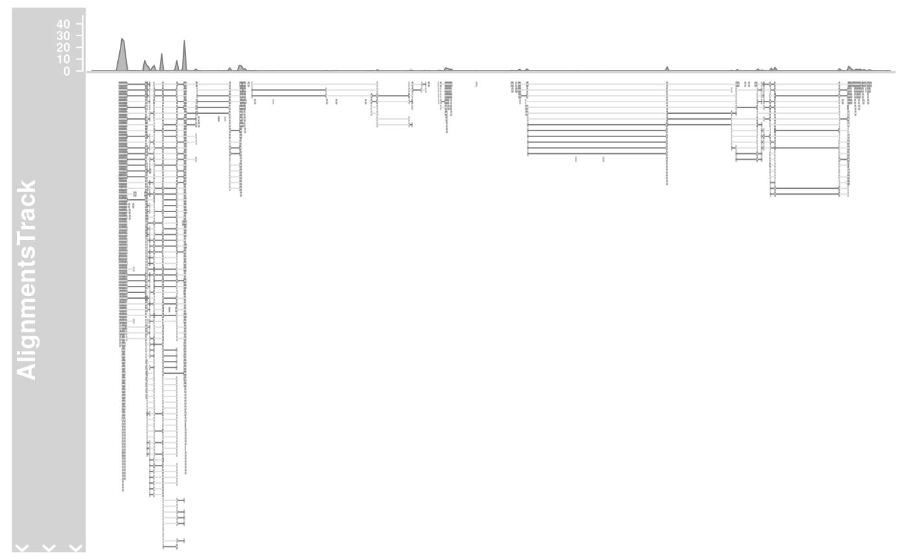

R/utils.R, R/ReferenceTrack-class.R
ReferenceTrack-class.RdA class allow for on-demand streaming of data off the file system.
availableDefaultMapping(file, trackType)
# S4 method for ReferenceTrack
initialize(
.Object,
stream,
reference,
mapping = list(),
args = list(),
defaults = list()
)A character scalar with a file name or just a file extension.
A character scalar with one of the available track types
in the package.
.Object
stream
reference
mapping
ars
defaults
Constructor functions of AnnotationTrack, DataTrack, SequenceTrack
and AlignmentsTrack`` can create a special object of corresponding Reference*Track` subclass with pointer to the referenced
file.
A virtual class: No objects may be created from it.
The availableDefaultMappings function can be used to find out whether
the package defines a mapping scheme between one of the many supported input
file types and the metadata columns of the tracks' GRanges objects.
availableDefaultMapping(): Function to find out whether the package
defines a mapping scheme between one of the many supported input file types
and the metadata columns of the tracks's GRanges objects.
initialize(ReferenceTrack): Initialize.
streamObject of class function. The import function to stream data
of the file system. Needs to be able to handle the two mandatory arguments
file (a character containing a valid file path) and selection
(a GRanges object with the genomic region to plot).
referenceObject of class "character", the path to the file containing the data.
mappingObject of class list, a default mapping between the
metadata columns of the returned GRanges object from the import function
and the elemenMetadata columns that make up the final track object.
argsObject of class list, the passed in constructor arguments
during object instantiation. Those will be needed when fetching the data
in order to fill all necessary slots.
defaultsObject of class list, the relevant default values to be
used when neither mapping nor args provides the necessary information.
# This is a reference class, below example from AlignmentsTrack
afrom <- 2960000
ato <- 3160000
alTrack <- AlignmentsTrack(system.file(
package = "Gviz", "extdata",
"gapped.bam"
), isPaired = TRUE)
plotTracks(alTrack, from = afrom, to = ato, chromosome = "chr12")
